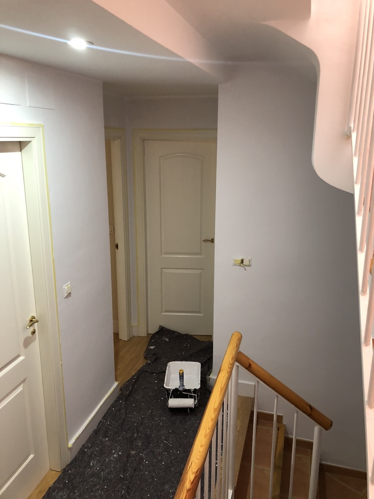

Pintor en La Zubia
Soy Asis, pintor desde 2012. En La Zubia hay mucha casa y mucho chalet, y eso cambia el trabajo: aquí entran las fachadas y los acabados buenos de dentro. Estoy a quince minutos, subo el mismo día a verlo y no te cobro el desplazamiento.
De los tres pueblos del cinturón donde más trabajo, La Zubia es el que menos se parece a los otros. En Armilla o Maracena el encargo típico es un piso: tabique de placas de yeso, techo con luz y pintura por dentro. Aquí hay bastante más vivienda unifamiliar y chalet, y eso mete en juego dos cosas que en un piso ni aparecen. La primera es la fachada: en un piso la pinta la comunidad cada tantos años y tú no decides nada; en una casa es tuya, la ves cada día al llegar y cuando se ensucia o se cuartea te toca a ti.
La segunda es que en una casa la gente se anima con acabados que en un piso de alquiler nadie se plantea. Aquí sí me piden estuco veneciano en un recibidor, una pared de microcemento en el baño o una pintura decorativa con textura en el salón. Son trabajos más lentos, más de mano que de rodillo, y por eso valen lo que valen — pero también son los que quedan bien diez años.
Y luego está lo obvio: una casa tiene alturas, escaleras, techos altos y a veces un porche. Eso no se resuelve igual que un salón de 20 metros. Por eso en La Zubia no doy nunca precio sin subir a verlo, aunque me mandes veinte fotos. Necesito saber por dónde se sube a esa fachada antes de decirte un número.
Pintor en La Zubia: fachadas de casa unifamiliar
La pintura de fachadas y exteriores va desde 6 €/m² con material incluido. Pero en una casa el precio no lo marca la pintura, lo marca el acceso. Una planta baja se resuelve con escalera y va rápido. Dos alturas, un frontal con voladizo o un patio estrecho ya piden andamio, y el andamio son días y dinero que hay que decir antes, no al final. Por eso subo, doy la vuelta a la casa contigo y salgo de ahí con el precio hecho.
Del trabajo en sí: lo que decide si una fachada aguanta cinco años o quince no es la marca de la pintura, es lo de debajo. Lavar, quitar lo que está suelto, sellar las fisuras y dar una imprimación que agarre. Si eso se salta, la pintura más cara del mundo se te levanta a placas al segundo invierno. Es la parte que no se ve en las fotos y donde se nota quién ha hecho el trabajo bien.
Acabados decorativos: estuco, microcemento y textura
Esto es lo que más diferencia a La Zubia de un piso del cinturón. La pintura decorativa con textura arranca desde 10 €/m² y sirve para dar carácter a una pared del salón sin irse de presupuesto. El estuco veneciano, desde 18 €/m², es otra liga: varias capas finas, bruñido a mano, y ese brillo con profundidad que no imita ninguna pintura. Y el microcemento, desde 85 €/m², ya no es pintura ni decoración de pared: es el único de los tres que aguanta agua y pisadas, así que es el que va en un baño, un suelo o una encimera. Cuesta bastante más que los otros dos porque son varias capas con malla, sellador y sus días de secado, pero es el único que puedes pisar y mojar.
Suelo pedir que empecemos por una sola pared. Un recibidor o el paño de detrás del sofá. Se ve el acabado en tu casa, con tu luz, y desde ahí decides si quieres más. Nadie debería gastarse el dinero de un estuco fiándose de una muestra pequeña vista en un catálogo.
Tabiques y falsos techos en La Zubia: cerrar, forrar y ganar una habitación
En casa unifamiliar la placa de yeso laminado casi siempre es para ganar espacio que ya tienes pero no usas: forrar una buhardilla, cerrar un porche o partir una habitación grande. Tabique simple desde 25 €/m², doble con aislamiento desde 35 €/m², y falsos techos desde 30 €/m² o desde 50 €/m² si llevan el foseado para tira de LED. Todo sin escombro y en días, no en semanas. Un aviso honesto: si el cierre cambia el exterior de la vivienda, pregunta en el ayuntamiento qué permiso hace falta antes de empezar.
Servicios y precios orientativos
Precios de partida. En casa unifamiliar el número cerrado sale después de verla, siempre.
Fachada de la casa
Lavado, sellado de fisuras, imprimación y pintura. Andamio aparte si hace falta.
Desde 6 €/m²Estuco veneciano
Capas finas y bruñido a mano. Para recibidores y paredes de salón.
Desde 18 €/m²Microcemento
Continuo y resistente al agua: baños, suelos y encimeras.
Desde 85 €/m²Pintura decorativa
Textura y efecto en una pared, sin irse de presupuesto.
Desde 10 €/m²Placas de yeso en casa
Cerrar un porche, forrar la buhardilla o partir una habitación.
25 – 35 €/m²Pintura interior
La casa entera por dentro: dos manos y material incluido.
4 – 9 €/m²
Quince minutos, y eso se nota después
La Zubia está a un cuarto de hora de Granada capital. No cobro desplazamiento ni por ir a verlo ni durante los días de obra, y como estoy cerca puedo subir a mirar una casa el mismo día que me llamas. Trabajo igual en Cájar, Huétor Vega, Gójar y Monachil, que están ahí al lado, y bajo a diario a Granada capital.
La cercanía importa sobre todo por lo de después. Si al año se marca una junta o hay que repasar un remate, me llamas, me acerco y lo hago. Eso solo vale si el que lo dice vive cerca. También trabajo en la costa, pero allí no puedo prometer eso con la misma cara, y prefiero decirlo. Si quieres una idea de precio antes de llamarme, la calculadora de presupuesto te da un número en dos minutos.
Lo que no hago
En casas unifamiliares me piden de todo, así que lo aclaro. No subo a tejados ni hago cubiertas. No impermeabilizo terrazas ni azoteas. No hago piscinas, ni jardinería, ni cerrajería. No hago electricidad ni fontanería, aunque en los tabiques dejo los pasos preparados. Y no toco estructura. Lo mío es pintura, acabados decorativos y tabiquería seca: si tu obra necesita otra cosa, te lo digo por teléfono y no te hago perder una tarde.
Lo que dicen de mí en Google
Estas dos las han escrito clientes míos en Google, con su nombre. No les he cambiado ni una coma. Las demás las tienes en mi ficha, que es donde de verdad se ve si un pintor cumple o no. — Asis
"Un placer trabajar con este equipo, me lo recomendaron y quedé muy satisfecho. Al principio solo necesitaba que arreglaran las aristas de las paredes de un piso antiguo que compré para dejarlas totalmente rectas. Al ver la eficiencia, lo económico que trabajan, y lo limpios que son, les pedí que me hicieran presupuesto para pintar el piso. Al final decidí pintarlo con ellos y el trabajo fue de 10. Un placer haber trabajado con ellos, muy recomendable."
"Quiero agradecerles por la excelente reforma del baño. El trabajo quedó perfecto, con mucha profesionalidad, atención a los detalles y acabados de gran calidad. Cumplieron con los plazos y siempre fueron muy amables y responsables. Estoy muy satisfecho con el resultado final y los recomiendo totalmente."
Lo que me preguntan en las casas de La Zubia
¿Cuánto cuesta pintar la fachada de una casa en La Zubia?
La pintura de exterior va desde 6 €/m² de superficie de fachada, material incluido. Lo que mueve el precio arriba no suele ser la pintura, sino cómo llegar: una planta baja se hace con escalera, pero dos o tres alturas piden andamio y eso hay que contarlo aparte. Por eso en unifamiliares no doy precio hasta ver la casa y saber por dónde se sube.
¿Qué diferencia hay entre el estuco veneciano y el microcemento?
El estuco veneciano, desde 18 €/m², es un acabado brillante y con profundidad para paredes de salón o recibidor: se aplica en varias capas finas y se bruñe. El microcemento, desde 85 €/m², es un revestimiento continuo mucho más duro que sí puedes usar en suelos, baños y encimeras porque aguanta agua y pisadas. Cuesta bastante más porque no es pintura: son varias capas con malla, sellador y sus días de secado. Uno es decoración de pared, el otro es un material de uso. Si me dices dónde lo quieres, te digo cuál de los dos toca.
¿Puedes cerrar un porche o forrar una buhardilla con placas de yeso?
Sí, es un trabajo muy típico en las casas de La Zubia. Se forra con placas de yeso y aislamiento por dentro y sacas una habitación aprovechable sin obra de albañilería ni escombro. El tabique simple va desde 25 €/m² y el doble, con más aislamiento, desde 35 €/m². Si el cierre afecta al exterior de la vivienda, comprueba antes con el ayuntamiento qué permiso necesitas.
¿Y si con el tiempo sale una grieta o se marca una junta?
Me llamas y me acerco a verlo. Vivo a quince minutos, así que no es una frase: si al año se marca una junta o hay que repasar un remate, subo y lo miro. Un golpe, una gotera nueva o una humedad de una tubería son otra cosa, y te lo digo claro.
¿Subes a La Zubia solo para dar un presupuesto?
Sí, y es gratis. Son quince minutos desde Granada capital: me llamas, quedamos y subo, normalmente el mismo día o al siguiente. Mido, te digo el precio y no cobro nada por el desplazamiento ni por la visita, decidas o no decidas trabajar conmigo.
¿Le damos vida a tu casa en La Zubia?
Llámame o escríbeme por WhatsApp y me paso a verla. Presupuesto gratis el mismo día.
¿Y cuánto me costaría a mí?
Calcula el precio de pintar tu casa en 2 minutos — sin compromiso y sin que nadie te llame.
Calcular precio gratis →